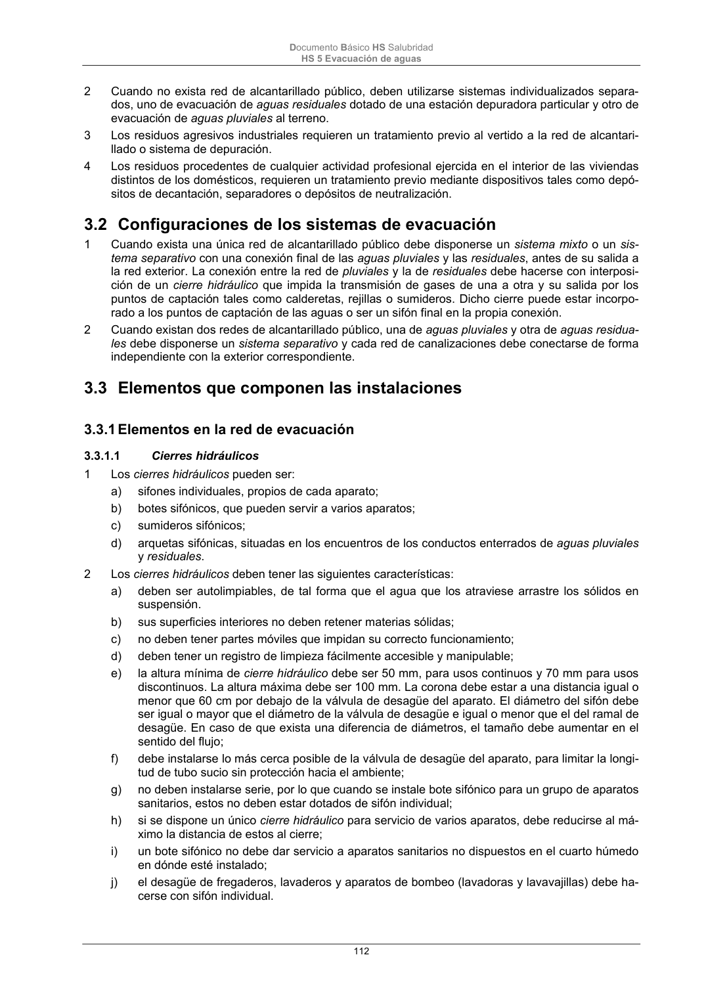

DB-HS Salubridad · edición 2022-06-14 · capa oficial
Documento DB-HS-oficial · SHA-256 del PDF 68df3caacc95f71aee2ec1ba7b2c65ae66155c21e3a8785521b8fdd4fd640d3b
Copia fiel del PDF fuente · Fuente oficial
Ficha de la disposición en la fuente oficial
Formatos: JSON del segmento · Markdown
3.2 Configuraciones de los sistemas de evacuación 1 Cuando exista una única red de alcantarillado público debe disponerse un sistema mixto o un sis- tema separativo con una conexión final de las aguas pluviales y las residuales, antes de su salida a la red exterior. La conexión entre la red de pluviales y la de residuales debe hacerse con interposi- ción de un cierre hidráulico que impida la transmisión de gases de una a otra y su salida por los puntos de captación tales como calderetas, rejillas o sumideros. Dicho cierre puede estar incorpo- rado a los puntos de captación de las aguas o ser un sifón final en la propia conexión. 2 Cuando existan dos redes de alcantarillado público, una de aguas pluviales y otra de aguas residua- les debe disponerse un sistema separativo y cada red de canalizaciones debe conectarse de forma independiente con la exterior correspondiente.
